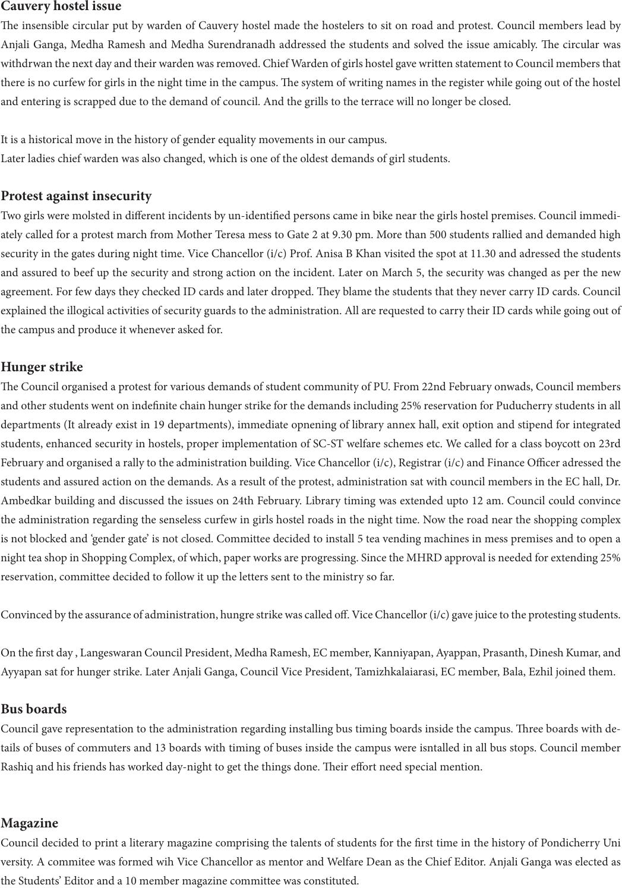

Cauvery hostel issue
e insensible circular put by warden of Cauvery hostel made the hostelers to sit on road and protest. Council members lead by
Anjali Ganga, Medha Ramesh and Medha Surendranadh addressed the students and solved the issue amicably. e circular was
withdrwan the next day and their warden was removed. Chief Warden of girls hostel gave written statement to Council members that
there is no curfew for girls in the night time in the campus. e system of writing names in the register while going out of the hostel
and entering is scrapped due to the demand of council. And the grills to the terrace will no longer be closed.
It is a historical move in the history of gender equality movements in our campus.
Later ladies chief warden was also changed, which is one of the oldest demands of girl students.
Protest against insecurity
Two girls were molsted in dierent incidents by un-identied persons came in bike near the girls hostel premises. Council immedi-
ately called for a protest march from Mother Teresa mess to Gate 2 at 9.30 pm. More than 500 students rallied and demanded high
security in the gates during night time. Vice Chancellor (i/c) Prof. Anisa B Khan visited the spot at 11.30 and adressed the students
and assured to beef up the security and strong action on the incident. Later on March 5, the security was changed as per the new
agreement. For few days they checked ID cards and later dropped. ey blame the students that they never carry ID cards. Council
explained the illogical activities of security guards to the administration. All are requested to carry their ID cards while going out of
the campus and produce it whenever asked for.
Hunger strike
e Council organised a protest for various demands of student community of PU. From 22nd February onwads, Council members
and other students went on indenite chain hunger strike for the demands including 25% reservation for Puducherry students in all
departments (It already exist in 19 departments), immediate opnening of library annex hall, exit option and stipend for integrated
students, enhanced security in hostels, proper implementation of SC-ST welfare schemes etc. We called for a class boycott on 23rd
February and organised a rally to the administration building. Vice Chancellor (i/c), Registrar (i/c) and Finance Ocer adressed the
students and assured action on the demands. As a result of the protest, administration sat with council members in the EC hall, Dr.
Ambedkar building and discussed the issues on 24th February. Library timing was extended upto 12 am. Council could convince
the administration regarding the senseless curfew in girls hostel roads in the night time. Now the road near the shopping complex
is not blocked and ‘gender gate’ is not closed. Committee decided to install 5 tea vending machines in mess premises and to open a
night tea shop in Shopping Complex, of which, paper works are progressing. Since the MHRD approval is needed for extending 25%
reservation, committee decided to follow it up the letters sent to the ministry so far.
Convinced by the assurance of administration, hungre strike was called o. Vice Chancellor (i/c) gave juice to the protesting students.
On the rst day , Langeswaran Council President, Medha Ramesh, EC member, Kanniyapan, Ayappan, Prasanth, Dinesh Kumar, and
Ayyapan sat for hunger strike. Later Anjali Ganga, Council Vice President, Tamizhkalaiarasi, EC member, Bala, Ezhil joined them.
Bus boards
Council gave representation to the administration regarding installing bus timing boards inside the campus. ree boards with de-
tails of buses of commuters and 13 boards with timing of buses inside the campus were isntalled in all bus stops. Council member
Rashiq and his friends has worked day-night to get the things done. eir eort need special mention.
Magazine
Council decided to print a literary magazine comprising the talents of students for the rst time in the history of Pondicherry Uni
versity. A commitee was formed wih Vice Chancellor as mentor and Welfare Dean as the Chief Editor. Anjali Ganga was elected as
the Students’ Editor and a 10 member magazine committee was constituted.